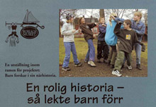

|
I Norrtälje arbetade jag och Roland Palmquist vid Roslagsmuseet tillsammans med elever i årskurs fem från Rådmansö skola och Viby friskola i Rimbo. Vi började brett. Eleverna fick sammanställa frågor de tyckte var intressanta att få svar på när det gäller tidigare generationers barndom. Det blev många uppstyltade och pliktskyldiga frågeställningar, som inte verkade skapa någon större entusiasm. Vi bestämde då att vi skulle börja i en lustfylld ände av projektet. Eleverna fick ta reda på vad man lekte förr. Barnen upprättade intervjuformulär, tränade intervjuteknik och intervjuade sedan anhöriga och grannar.
Det visade sig snart, att det är mycket svårt att i ord beskriva lekar, så barnen blev tvungna att med kamraters hjälp visa hur lekarna gick till. När denna "rapportering" var klar fortsatte de att leka. Lärarna var förtjusta och berättade att lekar på skolgården i stort sett försvunnit. Elever i lågstadiet tog på sina klassråd upp att de ville "gå till femmorna och lära sig leka".
När vi insåg att den viktigaste av alla kulturformer - barnens egna lekar - är ett arv som är på väg att gå förlorat, bestämde vi oss för att koncentrera oss på detta tema.
Vi lärde oss lekar och samlade in leksaker och samlarprylar från olika tider. Vi byggde dockskåp, gjorde tunnband och vek pappersleksaker. Vi planerade hela utställningen som en aktiv lekmiljö. Vi byggde en bakgård med utedass och tvättlinor, skaffade bollar, hopprep, rockringar, material till käpphästar, spelkulor och mycket annat.
Elever vid en filmkurs på Biskops Arnö folkhögskola filmade en del av rastlekarna och barnen gjorde egna animerade "instruktionsfilmer" för olika lekar med hjälp av en enkel animeringsutrustning som inköptes från Utbildningsradion.
Utställningen blev mycket uppskattad. Vid invigningen hölls tal av eleverna, de spelade invigningsmusik, och demonstrerade i isande snöglopp lekar för övriga besökare. Allt övervakades av en stor tygdrake, som "fastnat" i ett av museets högsta träd med hjälp av fyra brandmän och en stegvagn från Norrtäljes Brandförsvar. Museet hade engagerat Anne Kulle föra att visa utställningen för barnen och att lära dem gamla lekar ute i museets trädgård och antalet besökare per dag under de intensiva utställningsveckorna blev imponerande.
|